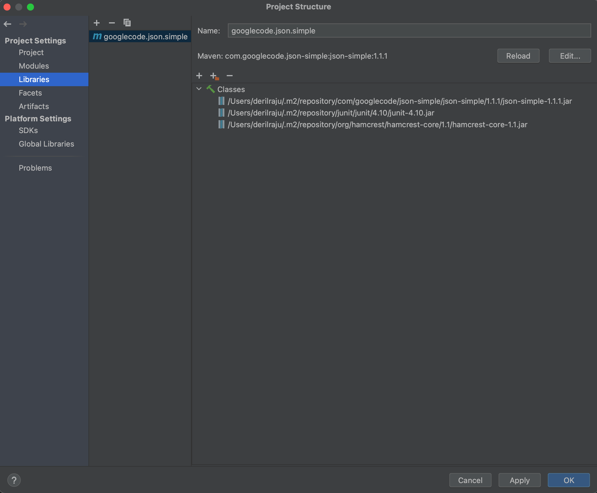

SETUP INSTRUCTIONS
Introduction
Current Maintainers: DERIL RAJU & REVANTH VENNU
This file shows how to setup the project and all the necessary instructions and dependencies
to the run the project.
Installation
You will need Java 11 to run the .jar file.
Running the JAR file
Find the JAR file here `Stocks_And_Portfolios/res/Stocks_And_Portfolios.jar`
To run the jar file use the command below
For Windows (Use Git Bash for better experience)
java -jar C://path//to//your//jar//file//Stocks_And_Portfolios.jar
For MacOS (In Terminal)
java -jar /path/to/your/jar/file/Stocks_And_Portfolios.jar
Usage of third party libraries.
This project makes use of three third party libraries which are used
to handle json file parsing which can be found here JSON-SIMPLE
to make charts which can be found here JFREECHART and,
dependency for jfreechart which can be found here JCOMMON
Json_Simple library is distributed under the APACHE LICENCE
2.0 which states that
2. Grant of Copyright License. Subject to the terms and conditions of this License, each Contributor hereby
grants to You a perpetual, worldwide, non-exclusive, no-charge, royalty-free, irrevocable copyright license
to reproduce, prepare Derivative Works of, publicly display, publicly perform, sublicense, and distribute
the Work and such Derivative Works in Source or Object form.
JCommon and JFreeChart library is distributed under the GNU LICENSE Software under the GPL may be run for all
purposes, including commercial purposes and even as a tool for creating proprietary software, such as when using
GPL-licensed compilers.[50] Users or companies who distribute GPL-licensed works (e.g. software), may charge a
fee for copies or give them free of charge
Steps to install json-simple on IntelliJ
1.Go to File -> Project Structure.
2.On the left hand side click Libraries and click "From Maven" under the + button.
3.Under donwload library search for "com.googlecode.json-simple:json-simple:1.1.1" and click ok.
4.click ok under choose modules, make sure it is being added to your project.
5.Click Apply and then OK.

6.Similiary add the other two third party libraries using the below in search box.
- org.jfree:jcommon:1.0.24
- org.jfree:jfreechart:1.5.3
List of libraries the application is using.
This project is making use of three third party libraries json-simple, jcommon, jfreechart
It uses other inbuilt JDK libraries like DateTimeFormatter, SimpleDateFormat, HttpClient etc which doesn't
require any separate installation.
How to use the program (Text Based Interface)
Now that your jar file is running follow the below steps as an example.
Select 1 for Text based interface.
Creating a portfolio of 1 stock
The first time you run it will show a screen to select one of the 10 inputs
Press 1 for creating a portfolio
Enter nunber of stocks you wish to enter (1 in this case)
For each stock, enter the stock name and the quantity, date on which it is to be purchased and the associated
commission for the trade. (you cannot give fractional shares)
You will receive a portfolio id after done entering all the stocks and quantities.
Press (n) to return to main menu.
Purchasing stock 1
In the main menu Press 6 to purchase a new stock.
Enter a existing portfolio id (you will be prompted to reenter if provided with a non existent portfolio.)
Enter the stock name and the quantity, date on which it is to be purchased and the associated
commission for the trade. (you cannot give fractional shares)
Press (y) to purchase another stock.
Purchasing stock 2
Enter a existing portfolio id (you will be prompted to reenter if provided with a non existent portfolio.)
Enter the stock name and the quantity, date on which it is to be purchased and the associated
commission for the trade. (you cannot give fractional shares)
Press (y) to purchase another stock.
Purchasing stock 3
In the main menu Press 6 to purchase a new stock.
Enter a existing portfolio id (you will be prompted to reenter if provided with a non existent portfolio.)
Enter the stock name and the quantity, date on which it is to be purchased and the associated
commission for the trade. (you cannot give fractional shares)
Press (n) to return back to main menu.
Querying portfolio for a particular date 2022-06-07
In the main menu Press 5 to get total value of a portfolio
Enter the portfolio id (1 in this case)
Enter the date in yyyy-MM-DD format to get the value on (2022-06-07 in this case)
Total value and composition will be printed on screen
Press (y) to get total value of another portfolio.
Querying portfolio for a particular date 2022-08-09
Enter the portfolio id (1 in this case)
Enter the date in yyyy-MM-DD format to get the value on (2022-08-09 in this case)
Total value and composition will be printed on screen
Press (n) to get back to the main menu.
Getting cost basis for a particular date 2022-06-07
In the main menu Press 8 to get cost basis of a portfolio
Enter the portfolio id (1 in this case)
Enter the date in yyyy-MM-DD format to get the value on (2022-06-07 in this case)
Total cost basis will be printed on screen
Press (y) to get cost basis of another portfolio.
Getting cost basis for a particular date 2022-08-09
Enter the portfolio id (1 in this case)
Enter the date in yyyy-MM-DD format to get the value on (2022-08-09 in this case)
Total cost basis will be printed on screen
Press (n) to get back to the main menu.
Exiting the program
Now that you are on the main menu, Press 10 to exit the program.
Data caveats
The program supports the stocks from the list of all stocks available on the AlphaVantage API.
Date Ranges allowed are as below (as per AlphaVantage Documentation):
- Lower threshold: 20 years before from today
- Upper threshold: Today (Present Day)